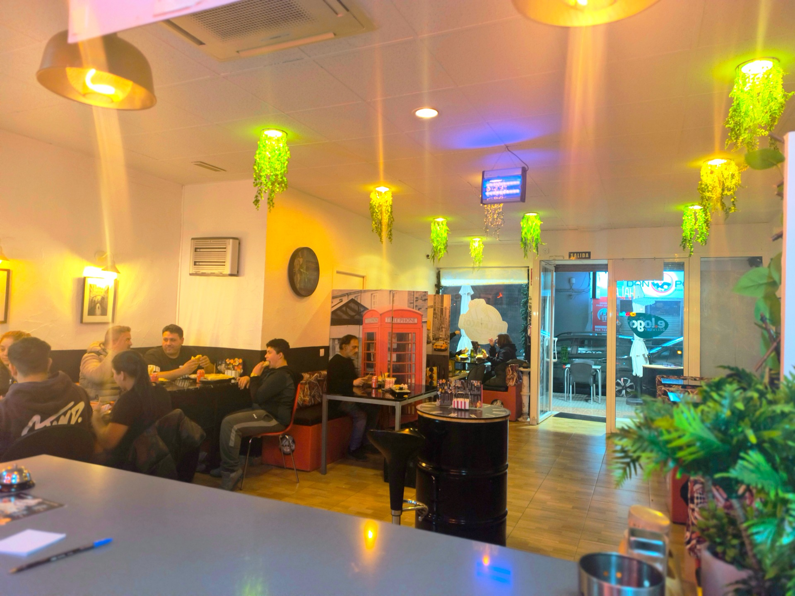

LA VALL D’UIXÓ · FRENCH TACOS & MÁS
El antojo.
Las reglas.
Las pones tú.
Doradito por fuera. Todo lo que te gusta por dentro.
Tu próximo taco empieza aquí.
01 — EL LABORATORIO DEL ANTOJO
Primero lo creas.
Después lo devoras.
Explora cada capa, elige tus ingredientes
y mira cómo toma forma tu taco.
¿Qué te apetece?
Quitar ingredientes no modifica el precio. No se añaden suplementos sin tarifa publicada.
Precios de la carta publicada. El menú suma los artículos por separado; no aplica descuento. Consulta al local para alérgenos, disponibilidad y precio final.

TE GUARDAMOS UN SITIO.03 — NOS VEMOS EN LA VALL
Tu sitio.
Tu gente.
Tu Halatacos.
Somos un restaurante de comida rápida en La Vall d’Uixó. Tacos, kebabs, pizzas, tapas y algo dulce para terminar: elige tu plan y nosotros ponemos el sabor.
DEL ANTOJO AL PRIMER BOCADO
Hazlo tuyo.
Personaliza tu taco o descubre la carta.
Elige tu plan.
Recógelo en el local o solicita entrega a domicilio.
Confirma y disfruta.
Envía tu solicitud por WhatsApp. El local confirma precio, disponibilidad y tiempo.